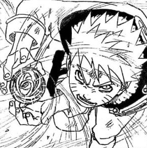

Sobre Naruto
Naruto é um jovem órfão habitante da Vila da Folha que sonha se tornar o quinto Hokage, o maior guerreiro e governante da vila. ... Agora Naruto vai contar com a ajuda dos colegas Sakura e Sasuke e do professor dos três, Kakashi Hatake, para perseguir seu sonho e deter os ninjas que planejam fazer mal á sua cidade.
O enredo de Naruto é baseado nas cinco grandes nações de Shinobis, cada vila possui um
elemento
da
natureza
para representá-lo. Cada nação possui sua escola ninja e seus treinamentos próprios.

Colocado no time de Sasuke e Sakura e liderado por Kakashi começa sua caminhada rumo a maturidade e superação ao longo do anime.
Pouco depois, Orochimaru (um dos vilões mais procurados) ataca a Aldeia Oculta da Folha,
assassinando o Terceiro Hokage em um ato de vingança pessoal. Isso acaba desencadeando que
Jiraiya, um dos três ninjas legendários (Sannins), inicie a busca da sua antiga companheira de
equipe Tsunade para designá-la como a Quinta Hokage.
Durante a sua busca é revelado que
Orochimaru quer encontrar Sasuke (a quem conhece por suas técnicas de dōjutsu) para oferecer-lhe
o poder que tanto deseja para matar seu irmão Itachi Uchiha, responsável pelo assassinato de
todo seu clã.
Sasuke aceita a proposta de Orochimaru e vai treinar com ele, e por isso
traindo a sua aldeia. Enquanto isso, Naruto decide fazer algo a respeito, e então resolve
deixar
a aldeia junto com Jiraiya durante dois anos e meio com o objetivo de treinar e preparar-se para
a
próxima vez que encontrar Sasuke, a quem tentará salvar.
O número de personagens com seus enredos bem desenvolvidos são incontáveis e as batalhas e
confrontos
são
conduzidos com emoção, sempre mostrando a história dos personagens e com mensagens importantes.
Se você começou a se interessar por animes e mangas, conheça o bairro da Liberdade em São Paulo, o tradicional reduto dos otakus! Onde encontramos a comida favorita do Naruto, o Lamén.
Tipos de jutsus
-
Ninjutsu
 -
Taijutsu
-
Genjutsu